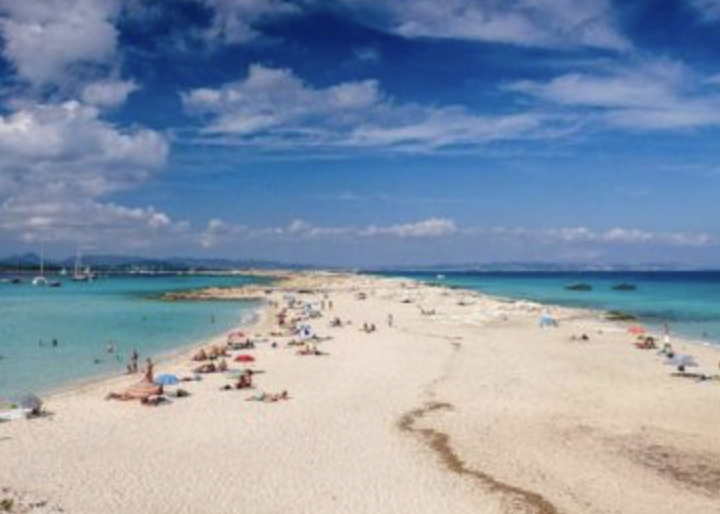

| Beach
|
Cities
|
Countryside
|
Navagio Beach, Greece
- Best things to do: Relax on the white sandy beach, swim in the crystal-clear waters, and take a boat tour to view the shipwreck that gave the beach its name
- Best time to visit: May to October – warm, sunny weather with minimal rainfall
- Insider’s tip: Arrive early or late in the day to avoid large crowds, especially in peak summer months
- Recommended duration: 1 - 2 days
Know More about Navagio Beach! |
Paris, France
- Best things to do: Visit iconic landmarks like the Eiffel Tower, Louvre Museum, and Notre-Dame Cathedral, explore charming neighborhoods like Montmartre, and enjoy Parisian cafes.
- Best time to visit: April to June and September to November – pleasant weather and fewer crowds.
- Insider’s tip: Consider buying skip-the-line tickets for popular attractions to avoid long wait times.
- Recommended duration: 3–4 days.
Know More about Paris! |
Lake Bled, Slovenia
- Best things to do: Visit Bled Castle, take a traditional pletna boat to Bled Island, and enjoy hiking around the lake.
- Best time to visit: May to October – pleasant weather perfect for outdoor activities and stunning lake views.
- Insider’s tip: Try the famous Bled cream cake, a local delicacy, in one of the lakeside cafes.
- Recommended duration: 2–3 days.
Know More about Lake Bled! |
Côte d'Azur, France
- Best things to do: Visit glamorous beach towns like Nice, Cannes, and Saint-Tropez, enjoy luxury shopping, and relax by the Mediterranean Sea
- Best time to visit: May to September – the weather is sunny and perfect for outdoor activities
- Insider’s tip: Make reservations for restaurants and beach clubs in advance, as they fill up quickly during the summer
- Recommended duration: 3 - 5 days
Know More about Côte d'Azur! |
Rome, Italy
- Best things to do: Explore the Colosseum, Roman Forum, and Pantheon, visit Vatican City, and indulge in delicious Italian cuisine.
- Best time to visit: April to June and September to October – comfortable weather for sightseeing and outdoor activities.
- Insider’s tip: Book tours for key attractions like the Colosseum to skip the long queues.
- Recommended duration: 3–4 days.
Know More about Rome! |
The Cotswolds, England
- Best things to do: Explore picturesque villages like Bibury, Stow-on-the-Wold, and Bourton-on-the-Water, and enjoy scenic walks in the countryside.
- Best time to visit: Spring and early autumn – when the villages are less crowded, and the landscape is at its most beautiful.
- Insider’s tip: Take a long walk along the Cotswold Way for stunning views of the rolling hills.
- Recommended duration: 2–3 days.
Know More about The Cotswolds! |
Playa de Ses Illetes, Spain
 - Best things to do: Sunbathe on the white sands, swim in the turquoise waters, and enjoy the views of nearby islands
- Best time to visit: May to October – warm temperatures ideal for beach activities
- Insider’s tip: Arrive early to find parking and enjoy the beach before it gets crowded
- Recommended duration: 1 - 2 days
Know More about Playa de Ses Illetes! |
Barcelona, Spain
- Best things to do: Visit the iconic Sagrada Familia, Park Güell, and La Rambla, relax on the beach, and enjoy the vibrant nightlife.
- Best time to visit: May to June and September to October – warm weather with fewer tourists.
- Insider’s tip: Be cautious of pickpockets, especially in tourist
Provence, France
- Best things to do: Visit lavender fields, explore hilltop villages like Gordes, and tour Roman ruins in cities like Nîmes and Arles.
- Best time to visit: June to August – the lavender is in full bloom, creating a spectacular sight and fragrance.
- Insider’s tip: Rent a car to explore the scenic countryside and hidden gems of Provence at your own pace.
- Recommended duration: 3–4 days.
Know More about Provence! |
|
|
Amalfi Coast, Italy
- Best things to do: Visit charming coastal towns like Positano and Ravello, enjoy stunning beaches, and explore cliffs and Mediterranean waters
- Best time to visit: April to June and September to October – mild temperatures and fewer crowds
- Insider’s tip: Rent a scooter to explore the coastline and find hidden beaches and scenic spots
- Recommended duration: 3 - 4 days
Know More about Amalfi Coast! |
Amsterdam, Netherlands
- Best things to do: Visit the Anne Frank House, Van Gogh Museum, and Rijksmuseum, take a canal cruise, and explore the vibrant Jordaan district.
- Best time to visit: April to May and September to November – mild weather and beautiful scenery, especially during tulip season.
- Insider’s tip: Rent a bike to explore the city like a local, as cycling is the most popular mode of transportation in Amsterdam.
- Recommended duration: 2–3 days.
Know More about Amsterdam! |
Swiss Alps, Switzerland
- Best things to do: Skiing in winter, hiking in summer, visiting the charming towns of Zermatt and Interlaken, and enjoying breathtaking mountain views.
- Best time to visit: December to March for skiing and June to September for hiking and outdoor activities.
- Insider’s tip: Take the scenic train ride on the Glacier Express for an unforgettable journey through the Alps.
- Recommended duration: 4–5 days.
Know More about the Swiss Alps! |